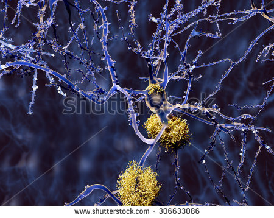
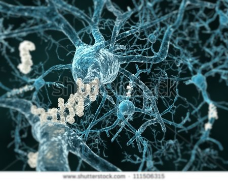
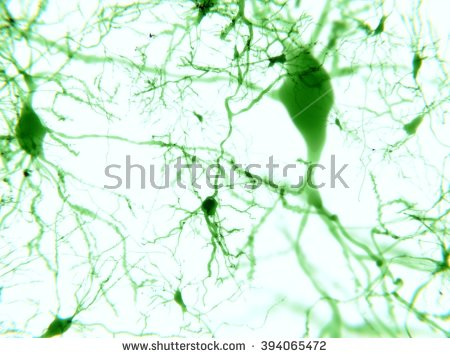
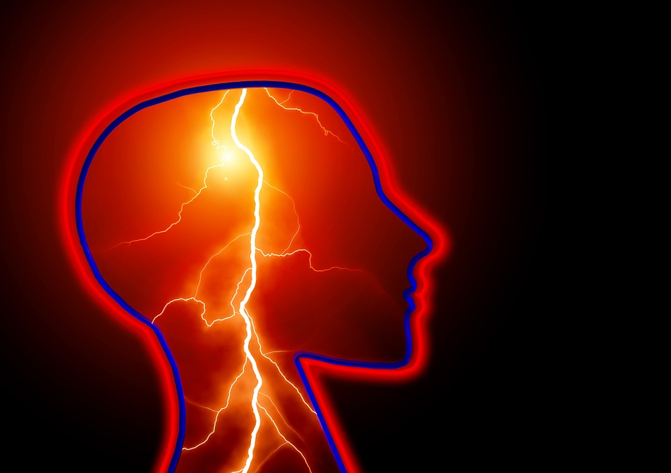
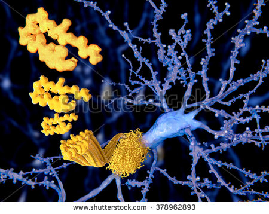
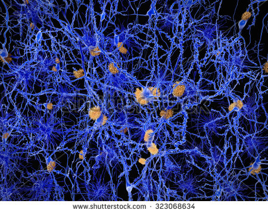

A: The website is a centralised site with a 4-directional layout, which means that there will be subpages/wings on each side of the screen. Each individual wing contains a grouped information which are displayed one at a time on each tier. The user can navigate around multiple tiers and wings using buttons or arrow keys.
A: To navigate around, use either buttons provided on the website or arrow keys. Buttons/Keys explanation:
Left button/Right key: moving 1 tier to the left of the center.
Right button/Left key: moving 1 tier to the right of the center.
Top button/Down key: moving 1 tier above the center.
Bottom button/Up key: moving 1 tier below the center.
Q: Why is the website so slow?
A: Some browsers (e.g. Google Chrome) may not be able to render the background properly, which causes serious delays/lags. We apologise for the inconvenience and will resolve the issue ASAP.
Q: How can I create an account?
A: Currently we do not provide the create an account functionality but this will be implemented soon!
Q: What is the purpose of this website?
A: Refer to the about us page.
Q: Is my information safe? (Privacy Policy)
A: Our website will feature basic statistic tracking, and data gathering from the user, with information including user age, gender and location. We also acknowledge that, whilst we don't directly ask for identifying information about the user such as names or passwords for other services, that such information may come into our possession through use of username or password fields. In any such case, all user information gathered will be maintained in manners befitting the utmost secure nature of such information, and will not be used or transferred in any purpose other than the intended use of the site – tracking the statistics and providing targeted information for the users.
Demographic: Young Children Background Information
Although strokes are primarily viewed as occurring mainly in the elderly, it also occurs in infants and young children and can even occur before the child's birth. The risk of stroke in children is greatest in the first year of its life and peaks roughly a few weeks after it is born. Although strokes do occur in infants and young children the chances are extremely low with strokes occurring in about 1 in every 4000 births The risk of stroke from birth though age 18 is nearly 11 per 100,000 children per year.2 In fact, stroke is one of the top 10 causes of death for children.
Of children surviving stroke, 50% to 80% will have permanent neurological deficits, most commonly hemiparesis or hemiplegia. Hemiplegia/hemiparesis (total or partial paralysis on one side of the body) is the most common form of cerebral palsy in children born at term, and stroke is its leading cause. Other long-term disabilities caused by a stroke occurring around the time of birth include cognitive and sensory impairments, epilepsy, speech or communication disorders, visual disturbances, poor attention, behavioural problems and poor quality of life.

When it comes to children Stroke risk factors, symptoms, prevention efforts, and treatment are often different in children than in adults. However, both age groups share a commonality in which rapid diagnosis and treatment and age appropriate rehabilitation can minimise death and disability in children.
Demographic: Young Children Symptoms/Prevention/Treatment
Stroke risk factors are much different for children in comparison to adults. Young children with stroke have symptoms that differ greatly to adults. In young children the first symptom of a stroke is often seizures involving only one arm or leg. Seizures are a much less common stroke symptom in adults. Some children with perinatal stroke may appear quite normal and later present with early handedness or developmental delay.

Prevention and treatment of stroke also differs in young children to that of an adult. The major treatment difference is the utilisation of the clot-bursting drug TPA for ischemic strokes. The use of TPA is common in the treatment for adults however it is not generally recommended for treating young children or infants. However, Children usually recover better from strokes than adults do due to the fact that their brains are still developing. However, children can experience permanent complications from stroke, such as seizures, weakness, and vision problems. Current treatments for children who suffer from a stroke include Supportive care to maintain normal body temperature, proper hydration, and normal blood sugar levels. Controlling high blood pressure. Detecting and treating seizures with EEG monitoring and anticonvulsant medication. Managing intracranial pressure. Blood transfusions for children with sickle-cell disease. Antithrombotic therapy, which refers to medications used to prevent blood clots from forming or growing, is used in children but generally not infants.
To prevent a stroke from occurring later on in life it is recommended that parents implement healthy living habits and eating habits, and also undertake the necessary precautions to reduce the risk for their children later on in life. Recommended actions include ensuring that they maintain a healthy diet filled with vegetables and fruit, especially carrots. Research has shown that carrots reduces the probability of strokes by up to 68%. Individuals are also recommended to increase their calcium and potassium intake, as these elements play an important role in controlling blood pressure and assist in controlling blood flow in the brain. It is also recommended that the individual reduce their salt intake as sodium increases the risk of a stroke. Finally, it is advised to monitor fat intake as it may cause hyperlipidaemia.
A stroke is the result of the interruption of blood flow to the brain. This is usually caused by a blood clot forming somewhere in the body, and blocking a vessel in the brain, preventing blood flow to a certain part of the brain. A stroke has lasting effects, both mental and physical. In severe cases, or in people who do not seek help immediately, death is also a very real possibility.

Strokes occur more frequently in the elderly, as documented by the American Stroke Association, with 66% of recorded cases occurring to individuals over the age of 65.
The rates of stroke for both males and females double each decade after age 55. Which is why it is imperative to implement healthy preventative methods early on in life.
The types of stroke suffered by the elderly are largely the same as strokes suffered by people of other age groups. Elderly people can suffer from both Ischemic strokes and Haemorrhagic stroke; however research has shown that Ischemic strokes have a far greater rate of survival over Haemorrhagic strokes. However, an elderly person that has survived a previous Haemorrhagic stroke has a greater chance of regaining normal functions after suffering a second stroke, Ischemic or Haemorrhagic.
Demographic: Mature Prevention/Treatment
Strokes occur more frequently in the elderly, as documented by the American Stroke Association, with 66% of recorded cases occurring to individuals over the age of 65.
Elderly people often suffer from additional illnesses, which may aggravate already existing stroke symptoms. For example, arthritis is a major cause of disability in elderly people, and is often observed in overweight or obese people, due to their joints wearing out faster than an individual at a healthy weight. In turn, obesity can both significantly raise the chance of stroke and make the symptoms of stroke much more difficult to deal with, not only for the sufferer, but also the individuals who may have to provide care for the stroke sufferer.
Due to the fact that the chance of falling victim to a stroke doubles as an individual reaches 65 it is imperative that individuals implement healthy habits early on in life as it is harder to combat strokes later on in life. However, this does not make it impossible to prevent strokes it only decreases the effectiveness of the methods utilised to prevent strokes. To reduce the chances of suffering from a stroke matured individuals should ensure that they are constantly monitoring their wellbeing, taking note of any changes and increases in blood pressure, the number of headaches that the individuals experiences or any sensations of numbness. It is recommended that if the individual experiences any of these symptoms they consult their doctor as soon as possible.
Matured individuals should also look into maintaining a healthy diet and undertaking regular medical check-ups and are encouraged to participate in physical activities that relieve stress and raise the mood of the individuals. Recommended activities include jogging and walking.
it is suggested that individuals do not undertake in any stressful activities that may affect their mood as it is harmful for the mental health of the individual.

To treat the different types of strokes for matured individuals suffering from a haemorrhagic stroke, matured individuals can undertake microsurgery in order to clip the aneurysm or remove the abnormal vessel. Treatment for ischemic strokes includes a dosage of certain medication such as warfarin, acetylsalicylic acid, clopidogrel.
Matured individuals who are suffering from diabetes must also ensure that they manage their diabetes effectively as having high blood sugar level will damage blood vessels causing clots to form from the inside. In order to maintain low blood sugar level individuals must ensure that they are constantly monitoring their blood sugar level as directed by their doctor and undertake in regular exercise and medicines to keep their blood sugar level within the recommended range.
Demographic: Young Adults and Middle Aged Background Information
A stroke is the result of the interruption of blood flow to the brain. This is usually caused by a blood clot forming somewhere in the body, and blocking a vessel in the brain, preventing blood flow to a certain part of the brain. A stroke has lasting effects, both mental and physical. In severe cases, or in people who do not seek help immediately, death is also a very real possibility.
Although stroke is seen as an issue mainly associated with elderly individual’s stroke is not an uncommon issue for young adults. As age increases the risk of suffering a stroke also increases. Although the overall rate of stroke is decreasing, the rate of stroke sufferers is increasing for young aged individuals between 18 and 40. A study published in the journal Neurology looked at stroke trends between 1999 and 2005, and found that the mean age of stroke decreased from 71 years to 69 years, and the rate of stroke in the 20 to 54 age range increased from about 13 percent to 19 percent.

Stroke in young adults requires a different approach to treatment and management because of the different symptoms and causes that vary between young adults and elderly individuals. All stroke is caused by decreased blood supply to the brain. In older adults, the most frequent cause is a blood clot that forms inside the heart or a blood vessel, breaks loose, and travels to the brain. This type of stroke is called an ischemic stroke. In young adults, however, common causes include infections, trauma, heart disorders, sickle cell disease, dehydration and in some cases drug abuse.
The types of stroke suffered by middle aged individuals are largely the same as strokes suffered by people of other age groups. Middle aged individuals can suffer from both Ischemic strokes and Haemorrhagic stroke; however, research has shown that Ischemic strokes have a far greater rate of survival over Haemorrhagic strokes. However, a middle aged individual that has survived a previous Haemorrhagic stroke has a greater chance of regaining normal functions after suffering a second stroke, Ischemic or Haemorrhagic.
Middle aged individuals are also susceptible to a number of health factors as well as daily life factors. For example, there is a large number of people that are aged between 40 and 55 that suffer from diabetes which can increase the risk of suffering stroke due to high blood sugar levels that will damage blood vessels causing clots to form from the inside. In order to maintain low blood sugar level individuals must ensure that they are constantly monitoring their blood sugar level as directed by their doctor and undertake in regular exercise and medicines to keep their blood sugar level within the recommended range. Drinking can also increase the risk of falling victim to stroke as regular heavy drinking can raise blood pressure to consistently high levels, increasing the risk of an individual experiencing a stroke.
Over the past few years the number of people aged between their 40’s and 50’s has increased exponential due to the rise in obesity and inactive lifestyles. Statistics from certain studies have identified that since 2000 the number of men aged between 40 to 54 that have been hospitalised due to a stroke has increased by 46% and among women the figure has increased by 30%. Strokes have not only an effect on a person’s wellbeing but also on an individual’s financial wellbeing as it can effect an individual’s ability to maintain a job. Strokes are also more difficult to recover from at an older age due to the brains reduced plasticity. Therefore, making it imperative that individuals establish a healthy lifestyle in order to prevent a stroke from ever happening in the first place.
Demographic: Young Adults and Middle Aged Treatment/Prevention/Symptoms
Strokes occur in all age groups with some age groups at higher risk of receiving a stroke than others, however although there are variations in the probability of receiving a stroke for some people the symptoms of a stroke are universal to all individuals regardless of age.
Symptoms of a stroke include: Facial weakness, arm weakness and difficulty with speech as well as weakness numbness or paralysis of the face Loss of vision, sudden blurring or decreased vision in one or both eyes, Headache, usually severe and abrupt onset or unexplained change in the pattern of headaches, and difficulty with swallowing.
The longer a stroke remains untreated, there is a greater chance that the victim will suffer stroke related brain damage. Therefore, it is impeccable that emergency medical treatment is sought out soon after symptoms begin in order to improve the chance of survival and successful rehabilitation.
In terms of treatment for victims the methods available are very similar to matured individuals. To treat the different types of strokes for matured individuals suffering from a haemorrhagic stroke, matured individuals can undertake microsurgery in order to clip the aneurysm or remove the abnormal vessel. Treatment for ischemic strokes includes a dosage of certain medication such as warfarin, acetylsalicylic acid, clopidogrel.
Emergency treatment for stroke depends on whether you're having an ischemic stroke blocking an artery — the most common kind — or a haemorrhagic stroke that involves bleeding into the brain.
Early treatment after a stroke is vital as the faster you can get treatment the more brain can be saved. If you arrive at a hospital quickly you may be treated with a drug known as TPA which is the cornerstone of stroke treatment and assists in breaking down the blood clots in the brain. For early treatment after a stroke – ischaemic (caused by a blood clot) you should be given aspirin as soon as possible after the stroke. Aspirin is not recommended if you have had a stroke where the blood vessel burst. Aspirin helps reduce further blood clots and lowers your chance of having another stroke.
Emergency treatment of haemorrhagic stroke focuses on controlling your bleeding and reducing pressure in your brain. Surgery also may be performed to help reduce future risk. Surgery may be used to repair blood vessel abnormalities associated with hemorrhagic strokes. Your doctor may recommend one of these procedures after a stroke or if an aneurysm or arteriovenous malformation (AVM) or other type of vascular malformation caused your hemorrhagic stroke.

The best treatment for a stroke is ensuring that you implement a healthy diet and lifestyle to prevent a stroke from ever occurring. Live a healthy live by maintaining a healthy diet and undertaking regular medical check-ups. Ensure that individuals monitor their psychological and mental health, and are encouraged to participate in physical activities that relieve stress and raise the mood of the individuals. Recommended activities include jogging and walking, it is suggested that individuals do not undertak in any stressful activities that may affect their mood as it is harmful for the mental health of the individual.
It is also suggested that individuals stay away from smoking. Smoking has been seen to accelerate clot formation in various ways. Firstly, it thickens the blood and increases the amount of plaque build-up in the arteries. Combined with a healthy diet and regular exercise smoking cessation is one of the most effective methods to prevent a stroke
An individuals’ diet is also one of the main factors that can assist in preventing a patient from experiencing a stroke. It is suggested that patients ensure that they maintain a healthy diet filled with vegetables and fruit, especially carrots. Research has shown that carrots reduces the probability of strokes by up to 68%. Individuals are also recommended to increase their calcium and potassium intake, as these elements play an important role in controlling blood pressure and assist in controlling blood flow in the brain. It is also recommended that the individual reduce their salt intake as sodium increases the risk of a stroke. Finally, it is advised to monitor fat intake as it may cause hyperlipidaemia. Chinese traditional medicine suggests that individuals should increase their bean products and tea dosage to assist in controlling the fat intake.
It is also suggested that individuals avoid alcohol, drugs and smoking